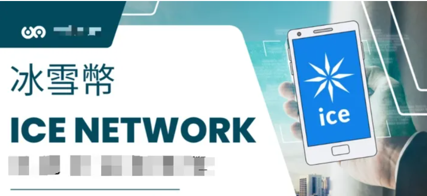
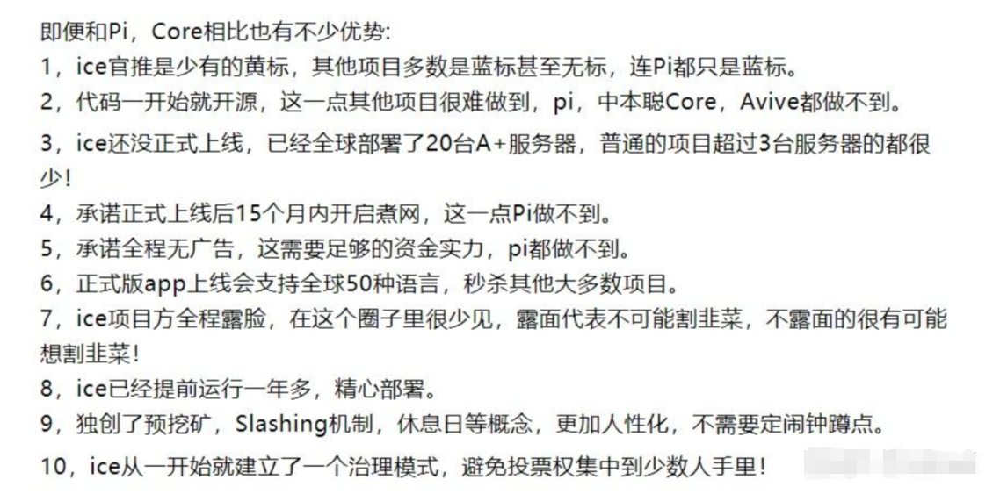

<body class="WhiteBg-body PostIndex-body" id="body" aria-basefontsize="17" data-rh="class">
  <div id="root">
    <div class="App">
      <div>
        <span style="position: absolute; top: -10000px; left: -10000px" role="log" aria-live="assertive"></span>
      </div>
      <main role="main" class="App-main">
        <div
          class="Post-content"
          data-zop-usertoken='{"userToken":"wo-shi-shui-71-76-22"}'
          data-zop='{"authorName":"我是谁","itemId":660445160,"title":"2023不可错过的零撸顶级项目-ICE币","type":"article"}'
          data-za-detail-view-path-module="PostItem"
          data-za-extra-module='{"card":{"content":{"type":"Post","token":"660445160"}}}'
        >
          <article class="Post-Main Post-NormalMain" tabindex="-1">
            <div class="Post-RichTextContainer">
              <div class="css-1yuhvjn">
                <div class="css-376mun">
                  <div class="RichText ztext Post-RichText css-117anjg" options="[object Object]">
                    <p data-first-child="" data-pid="NQA2lhP3">
                      长话短说：随着FTX等平台的崩溃，加密货币市场在2022年经历了一段动荡时期，其代币价值暴跌至不到1美元。
                    </p>
                    <p data-pid="WUjZzHl9"><b>新玩家的崛起：冰币</b></p>
                    <p data-pid="QgHxkeF4"><b>ice network 冰币简介：</b></p>
                    <p data-pid="E2QH0DuE">
                      ice冰币是去中心化的未来，是您可以使用手机免费开采的最新数字货币，会打造自己的公链。
                    </p>
                    <p data-pid="Z07jNeLg">
                      ice
                      网络是一个移动应用程序，允许人们在他们的手机上挖掘加密货币。它是免费、安全和开源的。这种改变游戏规则的方法将允许人们从世界任何地方进入加密货*经济，无论他们的财务状况或获得的资源如何。
                    </p>
                    <figure data-size="normal">
                      <div>
                        
                      </div>
                    </figure>
                    <p data-pid="n8xJeD9v">ice是一种新型数字货币，来自英国。</p>
                    <p data-pid="iMWHwlS8">
                      ice 这是一个非常严肃公链项目，公链可以理解成操作系统，如微软的windows操作系统，在windows
                      系统上安装的应用如QQ 和微信等可以理解成windows的生态，所有说ice
                      一旦成功，前途不可估量。ice是由20多名高级工程师、社会学家和经济学家组成的团队，已经进行了一年多的工作。我们团队的工作可以在
                      GitHub以一种非常透明的方式。到目前为止，我们已经投入了相当多的资金来发展和雇用合格的高级专业人员。我们对社区的承诺是继续发展生态系统的所有组成部分，以维持和赋予项目价值。
                    </p>
                    <p data-pid="VMW7l29z">
                      ICE冰币发行量目前不知多少，但是据冰币（iceNetwork）官方推特首次透露，该加密货币的总量将少于PiNetwork的1000亿。
                    </p>
                    <figure data-size="normal">
                      <div>
                        
                      </div>
                    </figure>
                    <p data-pid="mYnADjz9">
                      <b>ICE称</b>：如果用户不活跃，没有点击ice
                      标志按钮来启动一个新的采矿会话，他将开始从他的余额中逐渐损失硬币。在前30天不活动期间，用户将失去在过去30天活动中获得的所有金币。
                    </p>
                    <p data-pid="5DUeLeyC">损失将按每小时的比例计算。</p>
                    <p data-pid="OF8YFMlJ">从第31天开始到第60天不活动，用户将失去余额中的剩余硬币。</p>
                    <p class="ztext-empty-paragraph"><br /></p>
                    <p data-pid="Ufkz-vE4"><b>基于ice当下的全网推广资讯，我总结了大概想表达的意思就六条：</b></p>
                    <p data-pid="5IyKfLeI">1. ice项目方已经开发一年多，在黑猫网站上开源</p>
                    <p data-pid="t70-TVWg">2. 两代邀请奖励：一级收益 25%，二级收益5%</p>
                    <p data-pid="Fc5MdvwA">
                      3.
                      一机一号，后期需要KYC，切勿多开，邀请的人如果后期不能进行KYC，来自这个人的邀请奖励币也是会作废的，项目方主要是保证参与的都是真实活跃用户
                    </p>
                    <p data-pid="haV5AwOG">4. ice官网和APP(7月7日正式上线的)，有48国语言，多国同时上线开挖。</p>
                    <p data-pid="s9Woe-QE">
                      5. ice承诺没有广告，那么变现方式只能是等明年10月份上交易所变现，就跟中本聪core币的变现方式一样。
                    </p>
                    <h3>6. 玩法：</h3>
                    <p data-pid="QVouCR3Y">
                      ice 需要<a href="http://wzop.github.io" target="_blank">加速器</a>，ice
                      <a href="http://ice.io/zh" target="_blank">app下载</a>,
                      注册填写我的首码（即邀请码：<b>abc322</b>）可以额外获得<b>25%</b>的收益，ice上线多个功能(
                      <b>签到，提前签到（挖矿符号变黄可以长按）</b
                      >，预先质押，休息日，复活，不活跃削减期，额外奖金等)，这就意味着一旦开始，不挖的话币也会减少，挖2个月，1个月不挖，相当于只挖了1个月的，连续2个月不挖，你账户里的币将彻底消失。
                    </p>
                    <p data-pid="NH9KFH5_" class="ztext-empty-paragraph"><br /></p>
                    <figure data-size="normal">
                      <div>
                        
                      </div>
                    </figure>
                  </div>
                </div>
              </div>
            </div>
          </article>
        </div>
      </main>
    </div>
  </div>
</body>
